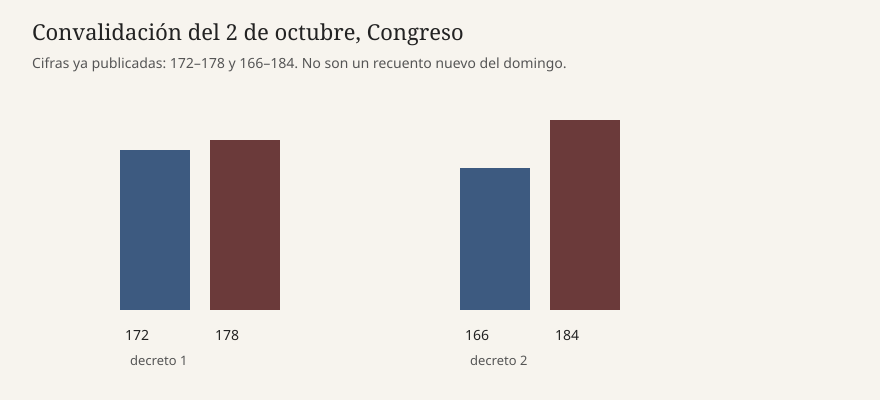

Madrid · Congreso · 4 de octubre de 2026
Sánchez cerró el domingo sin un decreto de disolución tras las marchas de vivienda
.png)
Lo que está dicho y lo que no está firmado
El domingo 4 de octubre de 2026 Pedro Sánchez seguía sin convocar elecciones. El viernes 2 el Congreso rechazó los dos decretos de vivienda, por 178 votos frente a 172 y por 184 frente a 166. El sábado hubo marchas en unas 50 ciudades. En Madrid la Delegación del Gobierno habló de unas 70.000 personas y el Sindicato de Inquilinas de 500.000. El domingo, Atlántico escribió que el presidente se había recluido en la Moncloa, sin agenda pública, y que se había dado el fin de semana para decidir si daba por terminada la legislatura. La decisión, según ese relato, podría conocerse el lunes en la ejecutiva socialista. Si disolviera ya, la primera fecha posible que maneja la prensa es el 29 de noviembre.
laSexta tituló el domingo que Sánchez “no tomará una decisión precipitada” sobre un posible adelanto. Esa frase es una atribución de ritmo, no un real decreto. Antena 3 recogió el mismo compás: Moncloa estudia volver a aprobar medidas en el Consejo de Ministros o dividirlas para tramitarlas aparte, y no descarta el adelanto. Ninguna de estas piezas enlaza una firma del rey ni una orden de disolución publicada en el BOE.
Qué es declaración y qué es calendario legal
Félix Bolaños, ministro de la Presidencia, dijo que “hay que darle una pensada” a la convocatoria. Es una fórmula de espera. El PNV, según Atlántico, lo da por hecho: “Todo suena a adelanto electoral.” Alberto Núñez Feijóo, desde Galicia, exigió elecciones y llamó a la vivienda “símbolo del fracaso” del Gobierno. Esas tres frases son posiciones de partido. No cuentan los escaños de una Cámara disuelta porque la Cámara no está disuelta.
El artículo 115 de la Constitución permite al presidente proponer la disolución después de consultar al Consejo de Estado y deliberar en el Consejo de Ministros. El rey expide el decreto. Hay plazos de campaña y una prohibición de disolver en algunos supuestos, entre ellos el primer año de la legislatura y cuando está en curso una moción de censura. Este texto no afirma que alguno de esos candados esté activo el 4 de octubre. Sí afirma que, sin decreto, el 29 de noviembre es una hipótesis de redacción, la misma que ya circulaba el sábado.
Por qué la vivienda sigue siendo el objeto y no el desenlace
Los decretos caídos contenían, en el relato de Antena 3, suspensión de determinados desahucios de personas vulnerables y medidas contra la compra especulativa. El rechazo de Junts, PP, Vox y UPN es el bloque que la prensa describe. Un adelanto no reescribe ese resultado. Una nueva convalidación, si el Gobierno parte los textos, tampoco. Las marchas miden presión. No sustituyen el recuento de 178 y 184.
La doble cifra de Madrid importa para leer el domingo. Quien diga que “la calle” ha forzado elecciones está eligiendo 500.000. Quien diga que la protesta fue menor está eligiendo 70.000. Las dos salieron el sábado de emisores distintos, sin método publicado. El silencio de Moncloa no aclara cuál de las dos pesa en la decisión. Bolaños pide tiempo. Eso es compatible tanto con un decreto el lunes como con agotar la legislatura.
Ceuta y el temporal catalán ocupan el mismo quiosco. No son el objeto de esta pieza. Entran solo como contexto de un domingo en el que la decisión electoral sigue sin documento.
Lo que esta pieza no es
No es un anuncio de elecciones. No es una encuesta. No es una sentencia sobre la política de vivienda. El logotipo de la Moncloa es la marca del complejo, no una imagen del presidente este domingo. El gráfico recupera los votos del viernes, que sí son números de pleno, y no inventa un recuento de asistentes.

Artículos fuente y puntuaciones
| Medio | Titular | T | N | C |
|---|---|---|---|---|
| Atlántico | Sánchez se recluye en Moncloa y la oposición eleva la presión | 84 | +18 | 68 |
| laSexta | Sánchez “no tomará una decisión precipitada” sobre unas posibles elecciones anticipadas | 82 | -8 | 64 |
| Reuters | Decenas de miles de personas se manifiestan en España por la crisis de la vivienda | 92 | 0 | 84 |
| El País Exprés | El Congreso ha tumbado los decretos de vivienda: ¿y ahora qué, elecciones? | 90 | -4 | 80 |
Reuters y El País fijan marchas y votos, no la decisión del domingo. Atlántico y laSexta cubren la espera, pero tratan el adelanto como escenario inminente y, en el caso de Atlántico, adoptan el marco de la oposición. C baja porque una reflexión sin decreto no es una convocatoria. El enlace de laSexta es la portada de nacional donde el medio colocó el titular el 4 de octubre; no hay una URL de artículo estable más precisa en las piezas vistas.